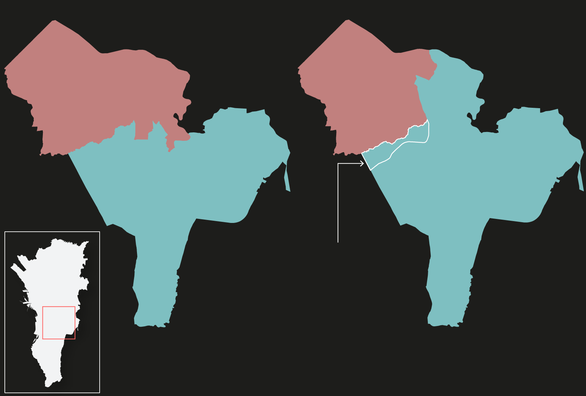
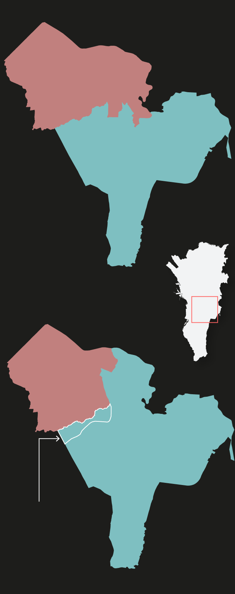
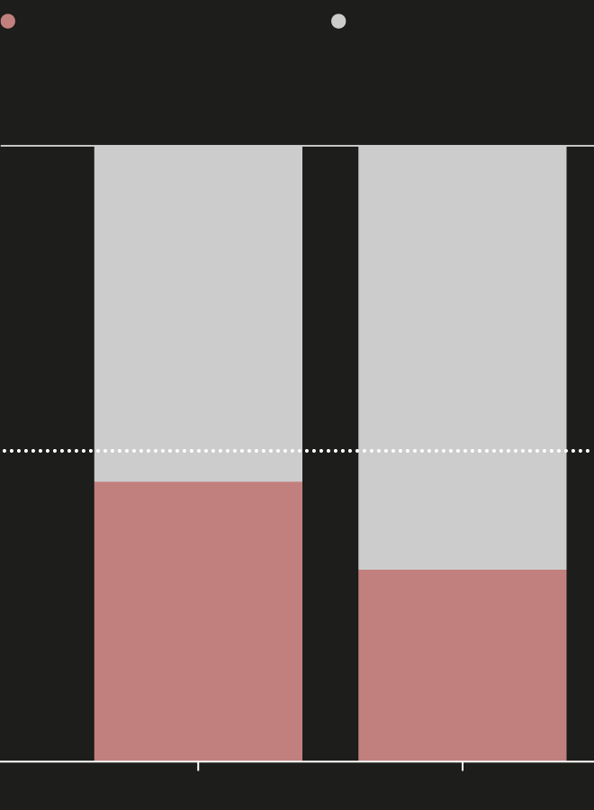
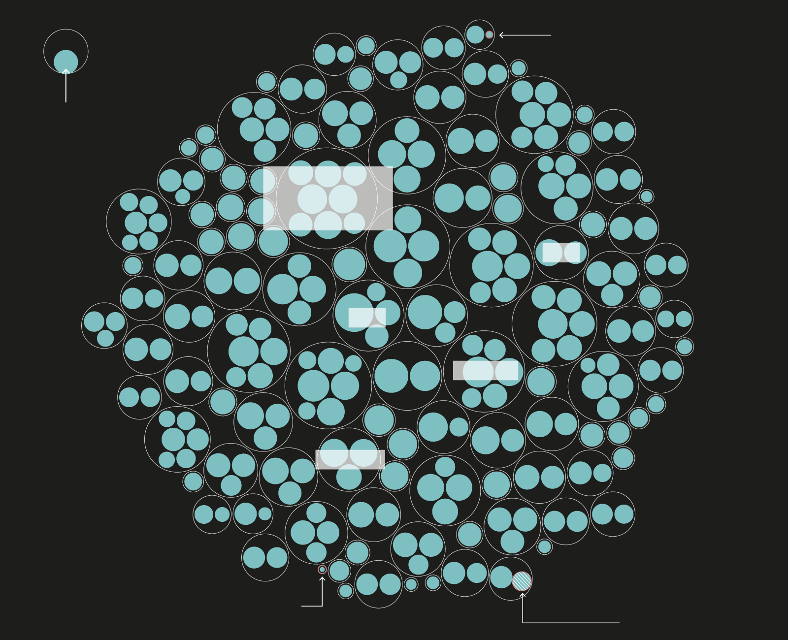
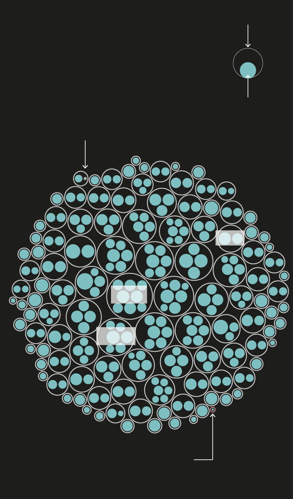
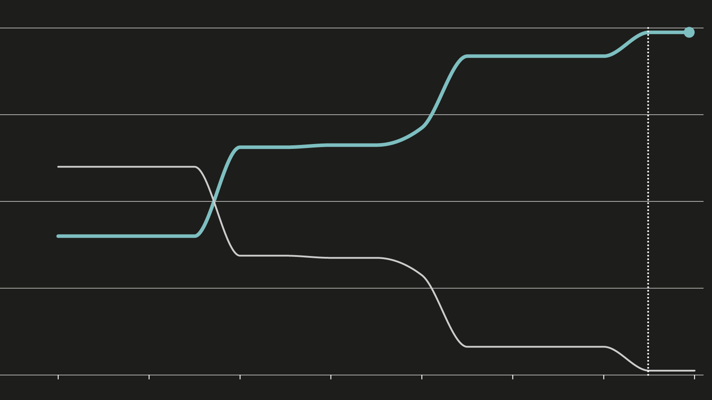
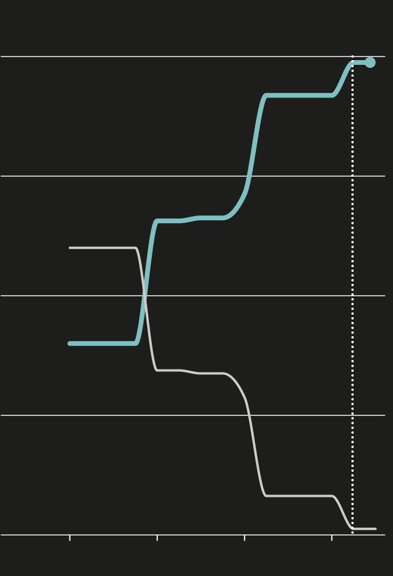

Updated: Feb. 1, 8:30 p.m., EST
S
ome residents of Makati City will see a different town name and
unfamiliar candidates on their ballot in elections next year.
That is after the Supreme Court last year reclassified 10 barangays
(villages) originally under Makati City as now part of its neighboring
Taguig City. The
court decision, which put an end to decades-long territorial dispute between the
two cities, left Makati at the losing end, decimating almost its
entire second congressional district and putting into question how the
city will be governed.
The transition has already started: previous Makati regional trial
courts have been transferred to Taguig's jurisdiction, Makati has
started budgeting for next fiscal year without accounting for revenues
from the 10 barangays, while even public requests to government
agencies for "Makati data" would exclude the territories subject of
the ruling.
Makati and Taguig: then and now
The Supreme Court decision in late 2022 drastically redrew the maps
of two of Metro Manila's cities

Before Supreme Court decision
After Supreme Court decision
Makati and Taguig were also in dispute over ownership of
Fort Bonifacio, although Taguig
has been governing the area.

Before Supreme Court decision
After Supreme Court decision
Makati and Taguig were also in dispute over ownership of
Fort Bonifacio, although Taguig
has been governing the area.
Sources: Author's analysis of the Supreme Court decision, James
Faeldon
At the heart of the decision is the transfer of the “embo” barangays
namely Cembo, Comembo, East Rembo, Pitogo, Pembo, West Rembo and South
Cembo. In addition, barangays Rizal, Post Proper Northside and Post
Proper Southside were also moved to Taguig. Fort Bonifacio, which has
typically been under Taguig, would stay with the city under the same
high court ruling.
By land area, Makati lost around 9.2 square kilometers to Taguig,
nearly the size of Boracay Island and about 16 times the size of Rizal
Park.
How big is the land area of the 10 barangays?
Source: Author's research
These 10 barangays were Makati's highly populated areas and home to 14
public schools where majority of the city's students go. Public school
fees are funded by taxes, but on top of that, Makati said it used to
offer aid to its students. This assistance was put in
peril
by the transfer of barangays to Taguig's fold. Taguig, for its part,
assured its new citizens continued education support.
The barangays were originally part of Makati's second legislative
district, together with barangays Guadalupe Nuevo, Guadalupe Viejo and
Pinagkaisahan. Collectively, this district is poorer than its
neighboring first district, which encompasses exclusive areas in
Forbes Park and San Lorenzo, and home to various tax-generating
amenities such as shopping malls.
But the "embo" and three other barangays are rich in votes. In the
most recent barangay elections in October 2023, registered voters in
the area reached over 212,000, equivalent to 45% of total votes in
Makati. An analysis showed that now in Taguig, votes from these areas
will continue to carry a significant weight, albeit at a lower 31%
share, when compared with other Taguig barangays.
This voting power has prompted Makati Mayor Abigail Binay, whose
family has led Makati for decades, to mull over the possibility of
running for Taguig mayor next year. Binay won her third and final term
as Makati mayor in 2022 with 338,819 votes.
Ten barangays transferred from Makati to Taguig are vote-rich areas
Share of registered voters of the 10 barangays when placed under
Makati or Taguig

Other voters from each city

Other voters from
each city
100% of registered voters
Note: Voters' registration data as of October 2023 barangay
elections.
Source: Comelec
The impact goes beyond local politics. With just three barangays under
Makati's new second district, the question now looms whether the
district– and the congressional seat– will remain. Data showed that
the population of the second district dropped to just around 38,000
from over 300,000 with the barangay transfer, according to May 2020
population data, the latest for which data is available. This
effectively made the district the smallest in terms of population just
next to Batanes. The district is currently served by Rep. Luis Jose
Campos.
Makati second district is second smallest in population with
barangay transfer
Legislative districts in the Philippines

Population of Makati’s second district dropped to
38,143 after the transfer of
barangays to Taguig, lowest after Batanes.
Circle size represents population
Cavite has the most number of legislative districts.
The 10 barangays are home to 336,873 people. It’s
unclear if it will form a district or join one in Taguig.
Batanes is the smallest legislative district with
18,831 people.

Circle size represents population
Population of Makati’s second district dropped to
38,143 after the transfer of
barangays to Taguig.
Batanes is the smallest legislative district with
18,831 people.
Note: Data as of May 2020.
Source: Philippine Statistics
Authority
The jurisdictional change also has bearing on public funds. By law,
20% of national government revenues are shared with the barangays,
which count that as part of their income. These revenues, in turn, go
toward financing public projects such as infrastructure and providing
social services to their residents.
Data showed that since 2012, Makati's second legislative district
accounted for an increasing share of national tax allocation
(previously called internal revenue allotment). That said, while the
tax allocation will be reduced, city administrator Claro Certeza had
said that subsidies used to go to these barangays will also be counted
as savings, helping lower expenses and offsetting a decline in
revenues.
"Makati does not rely on the NTA because of our consistent tax
collection performance. Locally-sourced revenues are more than enough
to fund our 2024 budget, not to mention the savings gained from the
subsidies previously given to the embo barangays," Certeza was quoted
as saying.
Bulk of Makati's national tax share go to its second district
Annual share of national tax allocation

58% of internal revenue allotment
Second legislative district
First legislative district

Second legislative district
First legislative district
Note: Mandanas ruling refers to the Supreme Court decision that
increased the local government share of national taxes.
Source: Philippine Institute for Development Studies
Correction
An earlier version of this story indicated that the 10 barangays
will no longer see Binay's name in the ballot for Makati mayor
next year because of being relocated to Taguig. The fact is Binay
is no longer eligible for reelection next year.
Sources
Comelec, Philippine Statistics Authority, Makati City government,
PIDS, James Faeldon
This is a personal project by Prinz Magtulis. Views and opinions
expressed here are of the author alone. This project, other
information and the author's portfolio are available on his personal
website.